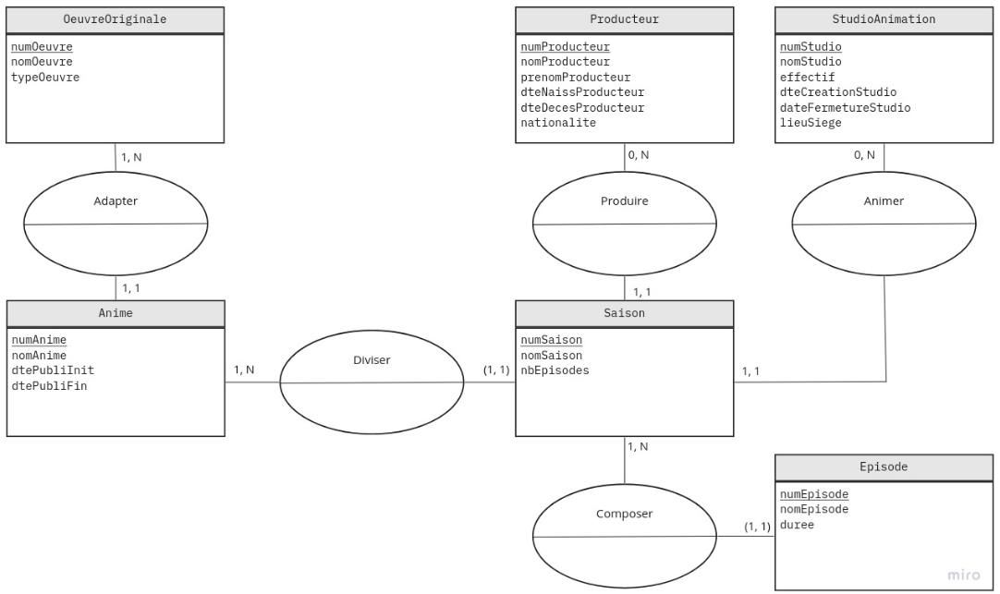

PORTFOLIO
Lemarchand Lucas B2
2021/2024
Lemarchand Lucas B2
2021/2024
Cette compétence se nomme : Gérer des données de l'information. Elle s'étend sur 2 années et est la compétence numéro 5 du BUT Informatique.
toutes les composantes sous différents niveaux de maitrise (acquis/en cours/non acquis)
Durant la SAE 1.04, il nous était demandé dans la phase 1 de créer une base de données selon un cahier des charges. Ensuite, venait la phase 2, où nous était donné la correction de la conceptualisation pour que nous puissions mettre notre base de données à jour.
"modèle MCD rendu pour la phase 1 de la SAE 1.04"

"Modèle MCD corrigé de la phase 2 de la SAE 1.04"
Même si la phase 2 consistait à exploiter la base de données, je n’aurais pas eu cette note sans que notre base ne soit fonctionnelle, j’estime donc maîtriser cette apprentissage critique.

"Notes obtenues lors de la SAE 1.04"
Durant la SAE 2.04, nous devions interroger une base de données qui nous était donné selon pleins de consignes. Afin d’interroger le plus efficacement notre base nous avons fait :
Des requêtes
"Exemple de requete faite durant la SAE 2.04"
Des vues
"Exemple de vue faite durant la SAE 2.04"
Des fonctions
"Exemple de fonction faite durant la SAE 2.04"
Et enfin pour afficher les résultats le mieux possible nous avons fait des visualisation
"Exemple de visualisation faite durant la SAE 2.04"
Durant la SAE 1.04, il nous était demandé dans une phase 1 de créer une base de données selon un cahier des charges. Nous avons donc conceptualisé puis créer notre base selon les demandes pour qu’elle soit le mieux possible.
"Exemple de visualisation faite durant la SAE 2.04"
Comme vous pouvez le voir nous avons eu une plutôt bonne note avec mon groupe, cela n’est pas parfait mais je pense en grande partie maitriser cet apprentissage critique.
"Notes obtenues lors de la SAE 1.04"
Durant les cours de base de données du premier semestre, il nous était demandé de créer notre base de données de notre choix. Nous avons donc choisi le thème de l’animation japonaise. Pour que la base soit la plus cohérente possible, nous avons dans un document expliqué tous nos choix, toutes nos tables et toutes nos relations. Enfin, afin de vérifier la qualité de celle-ci, nous avons rentré pleins de valeurs que nous avons ensuite testé.
Ici par exemple : - un animé est constitué de saisons, elles-mêmes constitué d'épisodes
- une animé est tiré d'une oeuvre originale
- une saison est créé par un producteur ainsi q'un studio d'animation
"Modèle de données de notre base de données personnels"
Vous pourrez trouver toutes les informations complémentaires sur la page du projet. Étant donné que nous avons tout pris en compte et tout justifier je pense avoir respecté cette composante essentielle.
Durant la phase 2 de la SAE 1.04 nous devions prendre en compte un modèle de relation pour construire/améliorer notre base de données. Ce modèle était donc indispensable, nous nous sommes donc beaucoup appuyés dessus.
Il y a aussi durant la SAE 2.04 où j’ai dû m’appuyer sur un modèle de relation. Dans celle-ci, il fallait exploiter une base déjà existante, il était donc important d’apprendre son fonctionnement en se servant de son modèle.

J’ai donc respecté cette composante essentielle.